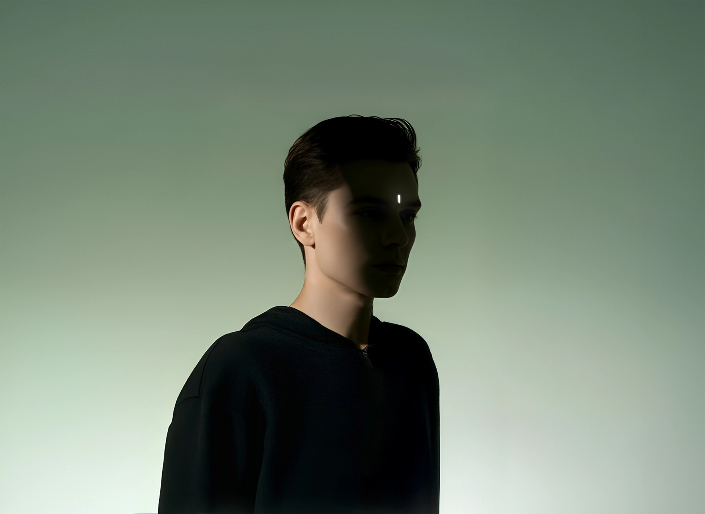
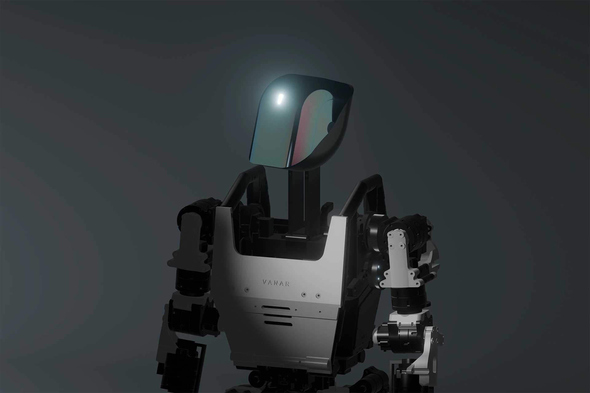

Every evolution of Vanar brings us closer to a future where humanoids don’t feel like machines placed inside homes, but like beings that belong there. Designed to exist naturally within our daily lives, Vanars are imagined not as tools, but as presences, quietly integrating into the rhythm of home, family, and routine.

The Indistinguishability Plan
Indistinguishability is our long-term pursuit of building humanoids that look, move, respond, and understand in ways that feel human.
Not to replace people, but to dissolve the friction that exists when humans interact with machines. When form, behavior, and intention
align closely with human norms, interaction stops feeling artificial and starts feeling intuitive.
Why Indistinguishability Matters?
A machine that feels mechanical is tolerated. A machine that feels human is trusted.
For Vanars to coexist inside homes, they must evoke comfort, familiarity, and emotional ease. Indistinguishability allows interactions to
feel natural, conversations without hesitation, assistance without discomfort, and presence without intimidation. Only then can a humanoid
become a genuine part of the household, not an object within it.
Life with Vanars at Home
A mother carrying the invisible weight of endless responsibilities. A curious child with ideas larger than their resources.
An aging parent waiting patiently for help with the simplest tasks. These are not edge cases, they are everyday human realities.
A capable humanoid that understands, assists, and adapts can quietly transform these lives. By blending into the family rather than standing apart,
Vanars can restore time, dignity, independence, and hope. This is not automation for convenience, it is technology shaped by empathy.

The Path to Indistinguishability
The journey begins with Vanar Generation 1, a deliberately mechanical humanoid built to learn before it resembles.
Gen 1 is the foundation: a 5’9” physical intelligence stepping into the real world during its beta deployments in 2026–27,
taking on tasks that are difficult, unsafe, or dehumanizing for people. This phase is observation, experience, and learning.
With every deployment, Vanar gathers real-world feedback— how humans move, speak, hesitate, trust, and adapt. Each subsequent
evolution refines form, perception, and interaction, bringing Vanar closer to human-like understanding and presence.
Indistinguishability is not a single leap. It is a careful, responsible progression, one generation at a time, towards a future
where humanoids coexist with humanity, not as replacements, but as companions shaped by the world they serve.
Conversations shape clarity. Reach out to understand our work, philosophy, or deployment approach.
Write to us at hello@vanarrobots.com
Vanars evolve through continuous learning and deployment. Follow our progress as it unfolds.